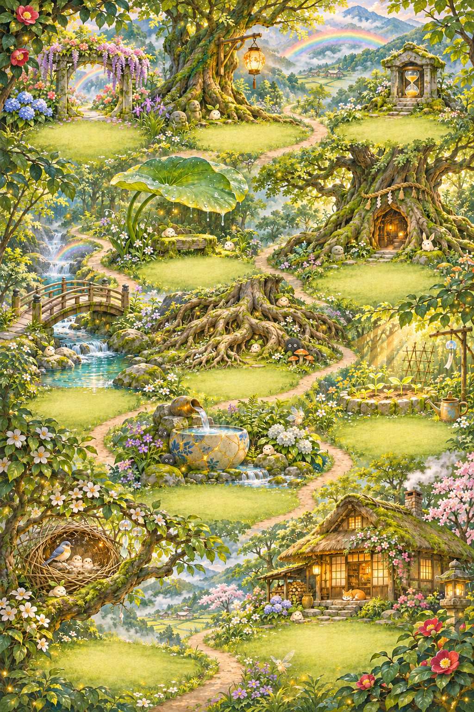

DIFFERENT MINDS. SHARED LIVES.
A little more room
for every kind of mind.
Neurodivergence, trauma, love and the everyday work of making a life together. A companion to When Protectors Collide.
Introduction & 11 chapters · Explore at your own paceA LANDSCAPE TO EXPLORE
Begin wherever you are.

I · UNDERSTANDING THE WHOLE PICTURE
II · UNDERSTANDING THE COLLISION
III · CHANGING EVERYDAY LIFE
∞
Room to be yourself.
Room to grow together.